PCA: A Brief Introduction#
Below, I want to refresh, or even introduce some of the important mathematical tools happening behind the scenes of Principal Component Analysis. These topics are common in a linear algebra setting, however their connections to practical problem solving is not always obvious. At the end, we demonstrate the implementation with Python and the sklearn machine learning library.
Important Concepts: Matrix, Eigenvalue, Eigenvector, Characteristic Polynomial, Covariance Matrix.
What is a Matrix#
A matrix is a two dimensional object that we will refer to by the number of rows and number of columns. For example, the matrix \(X\) below would be referred to as a \(2 \times 3\) matrix, as it has two rows and three columns.
import matplotlib.pyplot as plt
import numpy as np
import pandas as pd
X = np.array([[1, 4, -3], [0, 3, -2]])
X.shape
(2, 3)
Matrix Operations: Add, Multiply, Invert, Transpose#
Because we could have different sizes of matrices, we need to be revise our usual understanding of operations. To begin, matrices must be the same dimension to add with one another. For example, consider the matrices \(A\) and \(B\) below, and which are able to be added with the matrix \(X\) above. Note that this means matrix addition happens in an element wise fashion.
A = np.array([[0, 4], [8, -2]])
B = np.array([[4, 6, 2], [0, 4, -8]])
X + A
---------------------------------------------------------------------------
ValueError Traceback (most recent call last)
Cell In[5], line 1
----> 1 X + A
ValueError: operands could not be broadcast together with shapes (2,3) (2,2)
X + B
array([[ 5, 10, -1],
[ 0, 7, -10]])
Matrix Multiplication happens in a way where order matters. Again, dimension becomes a consideration. First, we define matrix multiplication as a row by column operation. As such, the row of the first matrix must contain the same number of elements as the column of the second.
np.matmul(X, B)
---------------------------------------------------------------------------
ValueError Traceback (most recent call last)
Cell In[7], line 1
----> 1 np.matmul(X, B)
ValueError: matmul: Input operand 1 has a mismatch in its core dimension 0, with gufunc signature (n?,k),(k,m?)->(n?,m?) (size 2 is different from 3)
np.matmul(A, B)
array([[ 0, 16, -32],
[ 32, 40, 32]])
X.T
array([[ 1, 0],
[ 4, 3],
[-3, -2]])
np.matmul(X, X.T)
array([[26, 18],
[18, 13]])
np.linalg.inv(np.matmul(X, X.T))
array([[ 0.92857143, -1.28571429],
[-1.28571429, 1.85714286]])
Special Case: Eigenvector and Eigenvalue#
Sometimes, multiplication of some vector \(A\) by a matrix \(v\) results in a scaled copy of \(v\). For example, consider
A = np.array([[2, -4], [-1, -1]])
v = np.array([[4], [-1]])
np.matmul(A, v)
array([[12],
[-3]])
Hence, we have $\(Av = \lambda v\)$.
We will call \(v\) the eigenvector of \(A\) and \(\lambda\) its associated eigenvalue.
Characteristic Polynomial#
Consider the problem where we need to determine the eigenvalue of a matrix, for example:
This means we need to find the values that solve the equation:
where \(I\) is the identity matrix
Essentially, this means finding where \((A - \lambda I)\) has no inverse. This happens when the determinant of \((A - \lambda I)\) is zero. We translate this in steps as:
Now, recall we have the formula for the determinant of a \(2 \times 2\) matrix as
so we have
A = np.array([[1, 2], [4, 3]])
A
array([[1, 2],
[4, 3]])
np.linalg.eigvals(A)
array([-1., 5.])
A Basic Example#
Consider two sets of observations and the data plotted below. We want to understand the variance (or displacement from mean squared) for each set.
xs = [20, 17.3, 10.0, 0, -10.0, -17.3, -20, -17.3, -10, 0, 10, 17.3]
ys = [0, 5, 8.7, 10, 8.7, 5, 0, -5, -8.7, -10, -8.7, -5.0]
np.std(xs)
14.133765716656454
np.std(ys)
7.087312607751968
plt.scatter(xs, ys)
plt.grid()
plt.title('Small example data set')
plt.xlabel('x1')
plt.ylabel('x2');
plt.savefig('pca1.png', dpi = 500)
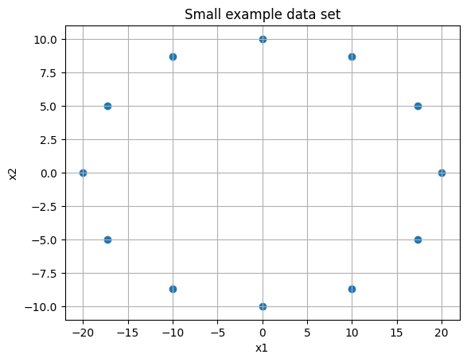
plt.figure(figsize = (15, 7))
plt.subplot(121)
plt.plot(xs, ys, 'o', color = 'blue')
plt.axhline(color = 'black')
plt.axvline(color = 'black')
for i in range(len(xs)):
plt.vlines(xs[i], 0, ys[i], linestyles='--', color = 'red')
plt.vlines(xs[i], 0, -ys[i], linestyles='--', color = 'red')
plt.title('Variance in Y')
plt.subplot(122)
plt.plot(xs, ys, 'o', color = 'blue')
plt.axhline(color = 'black')
plt.axvline(color = 'black')
for i in range(len(xs)):
plt.hlines(ys[i], 0, xs[i], linestyles='--', color = 'red')
plt.hlines(-ys[i], xs[i], -xs[i], linestyles='--', color = 'red')
plt.title('Variance in X');
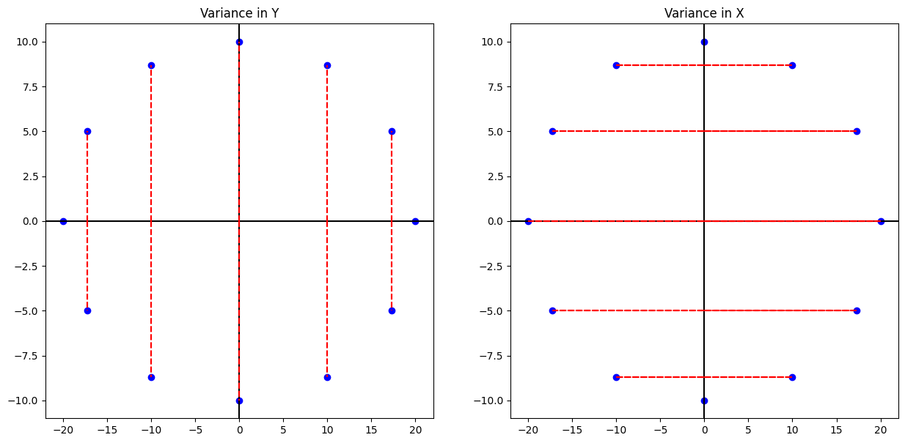
print('The mean of the ys are {} and variance is {}'.format(np.mean(ys), np.var(ys)))
The mean of the ys are 0.0 and variance is 50.23
print('The mean of the xs are {} and variance is {:.2f}'.format(np.mean(ys), np.var(xs)))
The mean of the xs are 0.0 and variance is 199.76
M = np.array([xs, ys])
M.shape
(2, 12)
plt.scatter(M[0, :], M[1, :])
<matplotlib.collections.PathCollection at 0x123c32540>
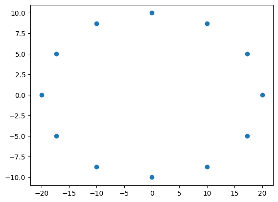
M.shape
(2, 12)
np.matmul(M, M.T).astype('int')
array([[2397, 0],
[ 0, 602]])
We can interpret this as telling us the eigenvalues of the original matrix. Also, we see the largest eigenvalue is near 2400, which is associated with the eigenvector \(\begin{bmatrix} 1 \\ 0 \end{bmatrix}\), aka the \(x\)- axis. The 602 is associated with the \(y\)-axis data. Now, consider the situation where we don’t have data perfectly symmetric with respect to the origin.
#rotation matrix
rot = np.array([[np.cos(np.pi/4), -np.sin(np.pi/4)], [np.sin(np.pi/4), np.cos(np.pi/4)]])
#matrix rotated
Mr = np.matmul(rot, M)
C = np.matmul(Mr, Mr.T)
eigs = np.linalg.eig(C)
eigs[1]
array([[ 0.70710678, -0.70710678],
[ 0.70710678, 0.70710678]])
print('Here, the eigenvalues are {},\nand eigenvectors are {}\nand {}'.format(eigs[0], eigs[1][0], eigs[1][1]))
Here, the eigenvalues are [2397.16 602.76],
and eigenvectors are [ 0.70710678 -0.70710678]
and [0.70710678 0.70710678]
#ax1 = [np.linalg.eig(C)[1][0][0] * i + np.linalg.eig(C)[1][0][1] for i in xs]
plt.scatter(Mr[0, :], Mr[1, :])
#plt.plot(xs, ax1, '--', color = 'red')
plt.quiver(eigs[1][0], eigs[1][1], scale = 4, color = 'red')
plt.axhline(color = 'black')
plt.axvline(color = 'black')
plt.grid()
plt.title('Rotated data and the principal components')
plt.xlabel('x1')
plt.ylabel('x2')
plt.savefig('pca2a.png')
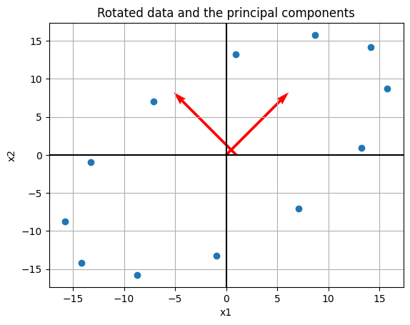
Thus, we’ve still identified the same axis as the principal components, and if we want the one with greatest variance it would be our rotated \(x\)-axis.
Variance#
To actually carry out the PCA, we want to consider the covariance matrix. In the example below, we take a matrix \(X\), mean center it, and compute its (sample) covariance matrix as
Consider the example where we have four observations about some population as follows:
#make above into a matrix
X = np.array([[1, 4, 7, 8], [2, 2, 8, 4], [1, 13, 1, 5]])
X
array([[ 1, 4, 7, 8],
[ 2, 2, 8, 4],
[ 1, 13, 1, 5]])
#mean across rows
M = X.mean(axis = 1)
M
array([5., 4., 5.])
#mean center data
B = X - M.reshape(-1,1)
B.shape
(3, 4)
#sample covariance matrix
S = 1/(B.shape[1]-1) * np.matmul(B, B.T)
S
array([[10., 6., 0.],
[ 6., 8., -8.],
[ 0., -8., 32.]])
np.linalg.eigvals(S)
array([ 1.60571114, 13.84296424, 34.55132462])
Here, we can interpret the larger eigenvalue corresponding to the vector with the largest variance. In PCA, if we wanted one principal component, we would identify the third column as such. Typically, we will have much of this obscured when we implement PCA using a computer.
The main idea is that given some matrix of observations \([X_1, X_2, ... , X_p]\), we mean center this, and find a matrix \(P = [u_1, u_2, ..., u_p]\) that determine a change of variable \(X = PY\) or
where the variables \(y_1, ..., y_p\) are not correlated and arranged by decreasing variance.
Implementing PCA with Python and sklearn#
Now, we see two ways to implement PCA using Python and the sklearn library. We have the choice of determining the number of components in advance, declaring the cutoff for how much variance we would like, or simply seeing the amount of variance explained by each and making a decision based on this output.
For this example we will consider a dataset containing observations about houses in the Boston area.
from sklearn.datasets import fetch_olivetti_faces
faces = fetch_olivetti_faces()
print(faces['DESCR'])
.. _olivetti_faces_dataset:
The Olivetti faces dataset
--------------------------
`This dataset contains a set of face images`_ taken between April 1992 and
April 1994 at AT&T Laboratories Cambridge. The
:func:`sklearn.datasets.fetch_olivetti_faces` function is the data
fetching / caching function that downloads the data
archive from AT&T.
.. _This dataset contains a set of face images: https://cam-orl.co.uk/facedatabase.html
As described on the original website:
There are ten different images of each of 40 distinct subjects. For some
subjects, the images were taken at different times, varying the lighting,
facial expressions (open / closed eyes, smiling / not smiling) and facial
details (glasses / no glasses). All the images were taken against a dark
homogeneous background with the subjects in an upright, frontal position
(with tolerance for some side movement).
**Data Set Characteristics:**
================= =====================
Classes 40
Samples total 400
Dimensionality 4096
Features real, between 0 and 1
================= =====================
The image is quantized to 256 grey levels and stored as unsigned 8-bit
integers; the loader will convert these to floating point values on the
interval [0, 1], which are easier to work with for many algorithms.
The "target" for this database is an integer from 0 to 39 indicating the
identity of the person pictured; however, with only 10 examples per class, this
relatively small dataset is more interesting from an unsupervised or
semi-supervised perspective.
The original dataset consisted of 92 x 112, while the version available here
consists of 64x64 images.
When using these images, please give credit to AT&T Laboratories Cambridge.
plt.imshow(faces['images'][0], cmap = 'gray')
<matplotlib.image.AxesImage at 0x10d7f6d50>
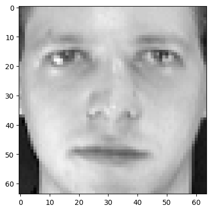
faces['data'][0].shape
(4096,)
X = faces['data']
y = faces['target']
fig = plt.figure(figsize=(8, 6))
# plot several images
for i in range(15):
ax = fig.add_subplot(3, 5, i + 1, xticks=[], yticks=[])
ax.imshow(X[i].reshape(image_shape), cmap=plt.cm.bone)
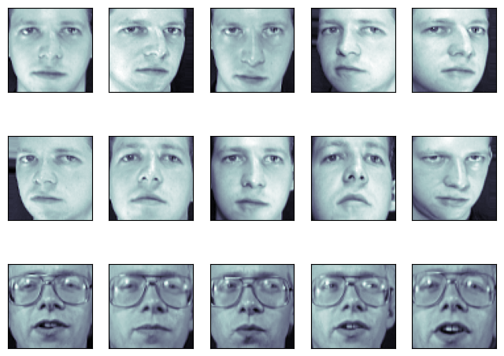
from sklearn.decomposition import PCA
pca = PCA()
df_pca_none = pca.fit_transform(X)
df_pca_none
array([[ 6.4326015e+00, 7.0367694e-01, -1.4300253e+00, ...,
2.6564749e-02, 9.4170114e-03, -9.8621776e-06],
[ 1.0759029e+00, 6.6973338e+00, 1.8428063e+00, ...,
-3.9317471e-04, -1.0404934e-02, -9.8627679e-06],
[ 5.2929497e+00, 1.5425032e+00, 2.2595981e-01, ...,
-2.4333008e-02, -7.9374071e-03, -9.8626924e-06],
...,
[-2.0407648e+00, 1.5096118e+00, 3.4487305e+00, ...,
2.1402145e-02, -3.7093335e-03, -9.8619394e-06],
[ 5.1652217e+00, -8.0967598e+00, -6.7101026e-01, ...,
-8.2222950e-03, 1.6309062e-02, -9.8620803e-06],
[ 1.1505016e+00, -2.4350321e+00, 1.1894926e+00, ...,
1.1126069e-02, 2.7804174e-02, -9.8623996e-06]], dtype=float32)
#these numbers are decreasing in terms of
#how much variance is explained, they are not in order
#as the features
[i.round(2) for i in pca.explained_variance_ratio_][:10]
[0.24, 0.14, 0.08, 0.05, 0.04, 0.03, 0.02, 0.02, 0.02, 0.02]
#here we only keep the top component
pca = PCA(n_components=1)
df_pca_1 = pca.fit_transform(X)
pd.DataFrame(df_pca_1, columns = ['Principal Component']).head()
| Principal Component | |
|---|---|
| 0 | 6.432607 |
| 1 | 1.075894 |
| 2 | 5.292948 |
| 3 | 4.253577 |
| 4 | 3.962007 |
#variance explained
pca.explained_variance_ratio_
array([0.23812729], dtype=float32)
#if we want to keep 95 percent of variance in original data
#how many features do we need?
pca = PCA(0.95)
df_pca_ninetyfive_percent = pca.fit_transform(X)
#seems we can reduce the features quite a bit!
pd.DataFrame(df_pca_ninetyfive_percent).head()
| 0 | 1 | 2 | 3 | 4 | 5 | 6 | 7 | 8 | 9 | ... | 113 | 114 | 115 | 116 | 117 | 118 | 119 | 120 | 121 | 122 | |
|---|---|---|---|---|---|---|---|---|---|---|---|---|---|---|---|---|---|---|---|---|---|
| 0 | 6.432601 | 0.703677 | -1.430025 | 1.278523 | -2.564395 | -0.950594 | -2.081773 | 2.937939 | -0.373889 | -0.243126 | ... | 0.053730 | -0.020700 | 0.164669 | -0.227838 | 0.055841 | 0.074256 | 0.086050 | -0.379610 | -0.276585 | -0.162568 |
| 1 | 1.075903 | 6.697334 | 1.842806 | 5.082053 | -0.730572 | -1.755451 | 1.575947 | 2.100697 | -1.072458 | -2.061425 | ... | -0.212974 | -0.073980 | -0.031484 | -0.046782 | -0.267977 | 0.437365 | -0.249701 | -0.032457 | 0.272344 | 0.475458 |
| 2 | 5.292950 | 1.542503 | 0.225960 | 1.111251 | -2.640083 | -1.674552 | -2.232214 | 3.189343 | -1.565537 | -0.599985 | ... | -0.424761 | 0.079386 | -0.003923 | -0.000485 | 0.174534 | 0.267647 | -0.148929 | 0.163957 | 0.251085 | -0.249365 |
| 3 | 4.253563 | -11.327764 | 0.091844 | -0.220428 | -1.407451 | -0.828456 | 1.170797 | 0.395940 | -0.189314 | -0.112226 | ... | -0.150361 | -0.042524 | -0.188622 | -0.084824 | -0.234410 | -0.164788 | -0.068787 | -0.024283 | -0.408592 | -0.029497 |
| 4 | 3.962011 | 3.293870 | 3.652863 | 3.553489 | -2.785638 | -1.815462 | 1.152088 | 1.140850 | -1.095520 | -1.024139 | ... | 0.270415 | -0.334221 | -0.183021 | -0.130896 | 0.052209 | 0.377321 | 0.542764 | 0.131786 | 0.016446 | 0.518832 |
5 rows × 123 columns
import matplotlib.pyplot as plt
import numpy as np
from sklearn.datasets import fetch_lfw_people
from sklearn.decomposition import PCA
pca = PCA()
X = X/255.
xt = pca.fit_transform(X)
from sklearn.model_selection import train_test_split
X_train, X_test, y_train, y_test = train_test_split(X, y)
from sklearn.neighbors import KNeighborsClassifier
knn = KNeighborsClassifier(n_neighbors=1)
knn.fit(X_train, y_train)
KNeighborsClassifier(n_neighbors=1)In a Jupyter environment, please rerun this cell to show the HTML representation or trust the notebook.
On GitHub, the HTML representation is unable to render, please try loading this page with nbviewer.org.
KNeighborsClassifier(n_neighbors=1)
knn.score(X_test, y_test)
0.98
np.unique(y_test)
array([ 0, 1, 2, 3, 4, 5, 6, 7, 8, 9, 10, 11, 12, 13, 14, 15, 16,
17, 18, 19, 20, 21, 22, 23, 24, 25, 26, 27, 28, 29, 30, 31, 32, 33,
34, 36, 37, 38, 39])
from sklearn.pipeline import Pipeline
pipe = Pipeline([('pca', PCA(.8)), ('knn', KNeighborsClassifier(n_neighbors=1))])
pipe.fit(X_train, y_train)
Pipeline(steps=[('pca', PCA(n_components=0.8)),
('knn', KNeighborsClassifier(n_neighbors=1))])In a Jupyter environment, please rerun this cell to show the HTML representation or trust the notebook. On GitHub, the HTML representation is unable to render, please try loading this page with nbviewer.org.
Pipeline(steps=[('pca', PCA(n_components=0.8)),
('knn', KNeighborsClassifier(n_neighbors=1))])PCA(n_components=0.8)
KNeighborsClassifier(n_neighbors=1)
pipe.score(X_test, y_test)
0.97
from sklearn.metrics import ConfusionMatrixDisplay
fig, ax = plt.subplots(figsize = (30, 8))
ConfusionMatrixDisplay.from_estimator(pipe, X_test, y_test, ax = ax)
fig.suptitle('Mistakes in Faces');
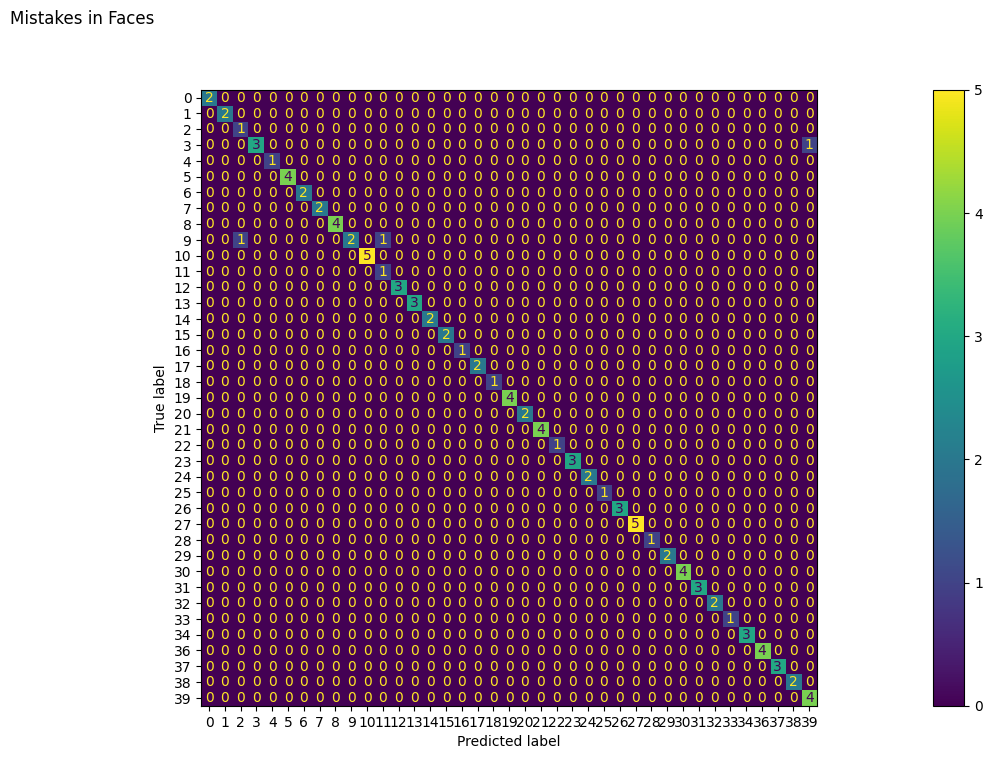
plt.imshow(pipe.named_steps['pca'].mean_.reshape(64, 64),
cmap = plt.cm.bone)
<matplotlib.image.AxesImage at 0x1417bf560>
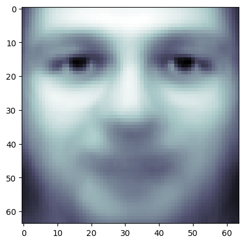
fig, axes = plt.subplots(3, 5, figsize=(15, 12),
subplot_kw={'xticks': (), 'yticks': ()})
for i, (component, ax) in enumerate(zip(pca.components_, axes.ravel())):
ax.imshow(component.reshape(64,64),
cmap=plt.cm.bone)
ax.set_title("{}. components".format((i + 1)))
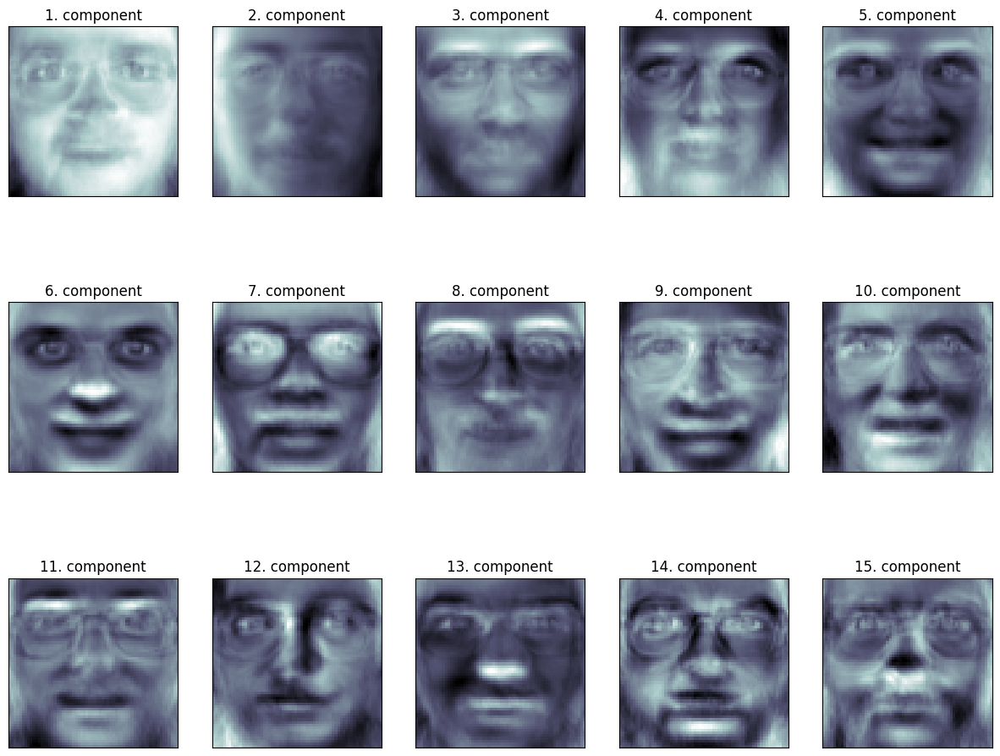
image_shape = (64, 64)
plt.imshow(pca.components_[0, :].reshape(image_shape), cmap = 'bone')
<matplotlib.image.AxesImage at 0x146940170>
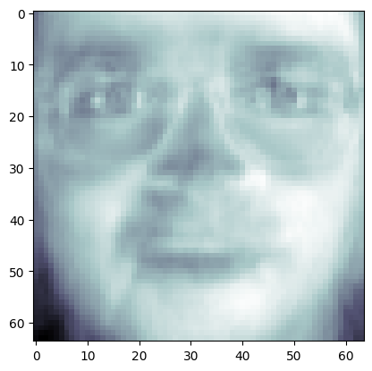
plt.imshow((pca.components_[0, :] + pca.components_[1, :]).reshape(image_shape), cmap = 'bone')
<matplotlib.image.AxesImage at 0x1469dc890>
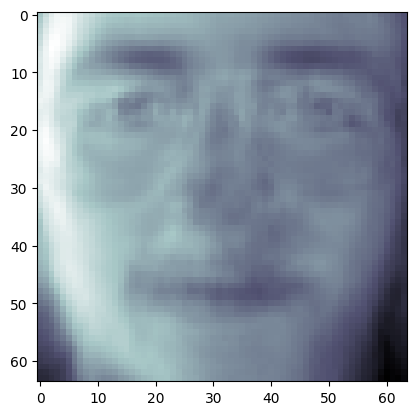
Problem: Handwritten Digits#
from sklearn.datasets import load_digits
digits = load_digits()
plt.imshow(digits.data[0].reshape(8, 8), cmap = 'gray')
<matplotlib.image.AxesImage at 0x146dda7e0>
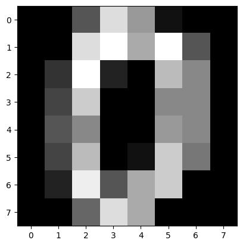
X = digits.data
X_train, X_test, y_train, y_test = train_test_split(digits.data, digits.target)